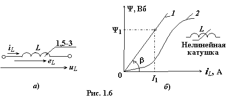

Индуктивная катушка − это пассивный элемент цепи, предназначенный для использования его собственной индуктивности L и/или его магнитного поля. Условные графические обозначения линейного и нелинейного индуктивных элементов на схеме цепи показаны на рис. 1.6а, б.
При нарастании тока в индуктивной катушке
происходит преобразование электрической энергии в магнитную и её накопление в
магнитном поле катушки, а при убывании тока – обратное преобразование энергии магнитного
поля в электрическую энергию, возвращаемую источнику.
Энергия, запасённая в магнитном поле
катушки,
(1.9)
где L – индуктивность катушки; iL – ток, протекающий через катушку и создающий в ней магнитный поток Ф и потокосцепление Ψ в веберах (Вб), равное
Ψ = wФ, (1.10)
где w – число витков катушки (предполагается, что магнитный поток Ф пронизывает все витки катушки).

Потокосцепление и ток линейной катушки (см. вебер-амперную характеристику 1 на рис.
1.6б) пропорциональны и связаны соотношением
Ψ = LiL или L = mLtgβ = const, (1.11)
где mL = mΨ / mI – масштабный коэффициент графика.
Откуда единица основного параметра катушки – индуктивности
[ L] = [Ψ] / [I] = В·t / A = Ом·c = Гн (генри).
Согласно закону электромагнитной индукции при изменении потокосцепления в катушке индуктируется ЭДС самоиндукции, равная (при её эксплуатации на линейном участке вебер-амперной характеристики)
eL = – – (1.12)
Знак "минус" показывает, что ЭДС самоиндукции, согласно правилу Ленца, препятствует изменению в ней тока. В индуктивной катушке будет протекать ток, если напряжение uL на её зажимах компенсирует ЭДС eL и падение напряжения на электрическом
сопротивлении R провода катушки.
Пренебрегая активным сопротивлением R, получим компонентное уравнение идеального индуктивного элемента (катушки):
uL ≈ –eL = или . (1.13)
Условно положительные направления
ЭДС самоиндукции eL и напряжения uL на схемах всегда совпадают (см. рис. 1.6а), а направление тока iL
произвольное (обычно выбирают направление тока iL, совпадающее с направлением напряжения uL).